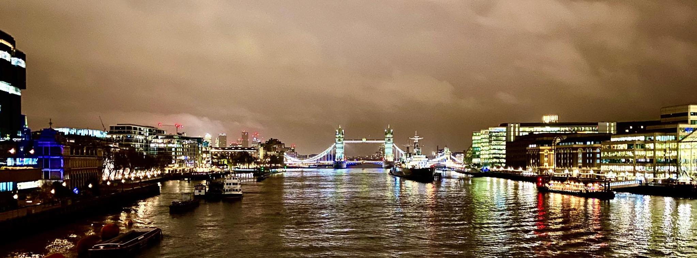

Londýn leden 2020

Na začátku října 2019 jsem v rámci svého kontraktu v Aures Apps začal pracovat na prediktivním modelu pro klienta z Londýna. O tři měsíce později bylo naše řešení připravené k nasazení, a tak jsme se s ostatními kolegy vydali do sídla klienta, abychom oficiálně zahájili jejich pilotní program.
DEN 0
Probudil jsem se ve 4:30. V Praze. Vedle mě ještě spal Mojmír, který byl natolik ochotný, že mě nechal u něho na bytě složit hlavu :-) V 5 hodin mě vyzvedl před domem firemní řidič, v jehož autě se už na mě smál kolega Martin. Společně jsme jeli do Holešovic, kde jsme vyzvedli našeho šéfa Viktora. S ním jsme pokračovali do Dejvic. Na Kulaťáku jsme nabrali posledního člena naší výpravy Pavla.
Na letiště jsme dorazili asi 15 minut před šestou hodinou, takže jsme měli dost času, abychom před odletem v 7:00 ještě nakoupili redukce na britské zásuvky, které jsme si všichni zapomněli doma.
Do Londýna jsme příletěli kolem 7:30 místního času. Z Heathrow na hotel jsme poté jeli Uberem. Na hotelu jsme se checkli v jednom pokoji, protože ostatní ještě nebyly připraveny. Kolem 10:30 nás vyzvedl projektový manažer Andrew, který nás zavezl do sídla společnosti. Tam jsme měli cca 2 hodiny dlouhé jednání, po kterém nás Andrew pozval na oběd do místní firemní jídelny. Nebylo to tam vůbec špatné. Já jsem si dal jacket potato s kuřecím masem.
V 15 hodin následovalo další jednání s lidmi z finančního oddělení, kterým jsem se snažil popsat, jak funguje model, na kterém jsem posledního čtvrt roku pracoval. Po chvíli ale moji prezentaci přebral Viktor, který prezentaci dokončil. Kolem 16:30 jednání skončilo, takže jsme jeli na hotel, kde jsme si chvíli odpočinuli.
Kolem 18. hodiny jsme si vzali Uber do centra Londýna, kam jsme jeli podle Martinových slov do “úplně skvělé restaurace” na večeři. Cesta trvala cca 1 hodinu a 30 minut, přičemž auto řídil “dvouprstý Ind” a já seděl na zadní sedačce uprostřed mezi Viktorem a Pavlem, takže jsem si v průběhu té nekonečné jízdy i říkal, zda nám to za to vůbec stálo.
Po příjezdu na místo jsem si ale uvědomil, že to za to stálo určitě. Ta “úplně skvělá restaurace” se totiž nachází v nádherné historické budově bývalé banky, kterou dnes využívá pětihvězdičkový hotel The Ned. V jeho vstupní hale se kromě “naší” italské restaurace Cecconi’s nachází ještě sedm dalších restaurací či barů a podium, na kterém v průběhu celého večera hrála živá jazzová hudba.
Ptáte se, co jsem si dal na jídlo? Podle Viktora dětskou polévku minestrone, pizzu s italskými párečky a pannacotu. Viktor měl dobrou náladu, takže objednal i víno. Co bylo ale lepší než jídlo a pití, byla dobrá atmosféra, která v průběhu večera panovala. Přišlo mi, že jsme si dobře popovídali a celkově se lépe poznali.
Po večeři jsme si udělali krátkou procházku k The Shard, přičemž jsme udělali několik fotek Tower Bridge. V The Shard jsme se chtěli jít podívat na vyhlídku na město. Ta byla bohužel už zavřená. Vyjeli jsme tedy alespoň do 32. patra (cca v půlce budovy), kde se nachází bar Oblix. V něm jsme si sedli, dívali se na noční Londýn, poslouchali jsme skvělou kapelu Pocket Jukebox a já popíjel pivo.
Kolem 23:30 jsme to zabalili a jeli Uberem zpět na hotel. Tentokrát byl náš řidič černoch a v průběhu cesty si zpíval. Při cestě panovala skvělá nálada, takže to opravdu rychle uteklo. Na hotelu jsem si už dal jen sprchu a kolem jedné šel spát.
DEN 1
Druhý den se toho v Londýně už tolik nestalo. Vzbudil jsem se v 7:30, zašel jsem na snídani, sbalil si věci a šel na check-out.
Kolem 10. hodiny jsme přijeli ke klientovi, kde jsme se s Andrewem připravili na stěžejní meeting naší návštěvy. Meeting začal v 11:30 a trval cca 3 hodiny. A probíhal velice dobře. Přišlo mi, že všichni zúčastnění byli z našeho řešení nadšení.
Kolem 14:30 jsme vyrazili Uberem na letiště, tentokrát řídil John, který měl podle mě špatnou náladu. Na letišti jsme si dali burger v jedné restauraci a v 17:35 odletěli do Prahy. Na letišti Václava Havla jsme přistáli kolem 20. hodiny, potom mě firemní taxikář zavezl na Florenc, kde jsem si sedl do Stabucks a pracoval. Ve 22:00 mi Starbucks zavřeli, takže jsem se přesunul do McDonald’s. Ve 23:00 odjezd do Brna, v 1:30 jsem byl v Brně, ve 2:00 v posteli.
FOTKY
Fotky z Londýna najdete zde.